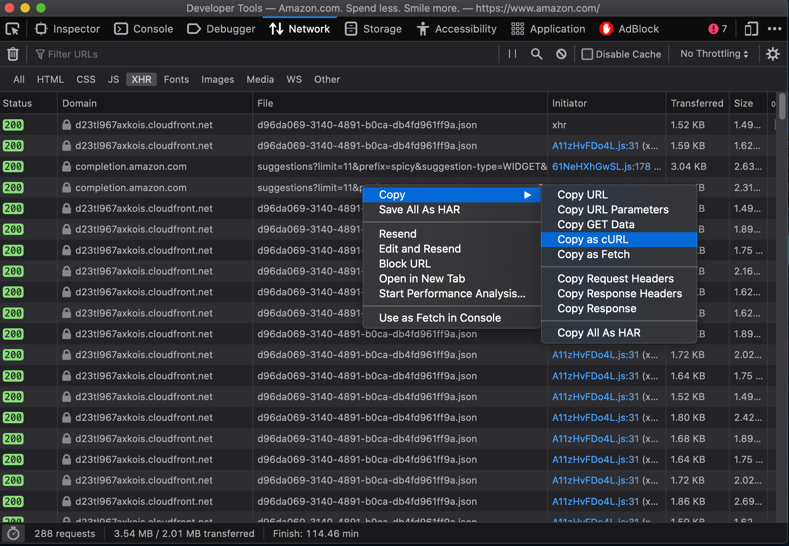

import requests
cookies = {
'aws-ubid-main': '836-8365128-6734270',
'session-id-time': '2082787201l',
'ubid-main': '135-7086948-2591317',
'aws-priv': 'eyJ2IjoxLCJldSI6MCwic3QiOjB9',
'aws-target-static-id': '1593060129944-225088',
'lc-main': 'en_US',
'aws-userInfo': '%7B%22arn%22%3A%22arn%3Aaws%3Asts%3A%3A335340120612%3Aassumed-role%2FAWSReservedSSO_PowerUserAccess_4dc523239a9019dc%2Fleon.yin%40themarkup.org%22%2C%22alias%22%3A%22themarkup-journalist-sandbox%22%2C%22username%22%3A%22assumed-role%252FAWSReservedSSO_PowerUserAccess_4dc523239a9019dc%252Fleon.yin%2540themarkup.org%22%2C%22keybase%22%3A%22Fwu%2FzLIz0yD%2FyfrORX%2BSIpIQPXrzr0kt24uqa8mNs7g%5Cu003d%22%2C%22issuer%22%3A%22https%3A%2F%2Fd-90677ebe1e.awsapps.com%2Fstart%2F%23%2Fsaml%2Fcustom%2F335340120612%2520%2528AWS%2520Journalist%2520Sandbox%2529%2FMTI5NTE5MjY4NzI0X2lucy0wNzcxNmExOGZlNThiYjIyX3AtNDUyYTgyOTRhNTJlYWZjNQ%5Cu003d%5Cu003d%22%2C%22signinType%22%3A%22PUBLIC%22%7D',
'x-main': 'Oz3Tb5n2p0ic7OhF3cU5dc9B4ZR2gFjhKEsP4zikHHD3Gk2O7NpSmuShBxLFrhpZ',
'at-main': 'Atza|IwEBILB5ARQ_IgTCiBLam_XE2pyT76jXTbAXHOm2AJomLPmDgoJUJIIlUmyFeh_gChLHCycKjNlys-5CqqMabKieAzqSf607ChJsNevw-V06e7VKgcWjvoMaZRWlGiZ-c5wSJ-e4QzIWzAxTS1EI6sRUaRZRv-a0ZpOJQ-sHHB99006ytcrHhubdrXYPJRqEP5Q-_30JtESMpAkASoOs4vETSFp5BDBJfSWWETeotpIVXwA4NoC8E59bZb_5wHTW9cRBSWYGi1XL7CRl2xGbJaO2Gv3unuhGMB1tiq9iwxodSPBBTw',
'sess-at-main': '"PUq9PW1TbO9CTYhGMo7l1Dz+wedh40Ki8Z9rPC+1TSI="',
'sst-main': 'Sst1|PQHsbeSFCMSY0X0_WgvTo5NUCaZkG2J9RPqWWy0fCpyWopJXgu6_drU_LstOdJB2cDmaVCXwkNpsF5yNPrBDj3Wtx-TC-AaYZn6WUdp8vNRPb6iYqxPAjRDnfK3pCnHqt19I0GoG7Bd1wnOxkAvnH0992IUq14kH6Ojm0J8noVPwMez0lltD-jxBwtDQ_EZYUkZG741RDVEojfziawJY9iKc-cLCnKmhi-ca1PPJnsimPV4lXRtMAGFbf9nMkKq4CbpkaRMdVtlPr20vF9eqg_V_-LY_V7S44WlO-_t_bFBnK8Q',
'i18n-prefs': 'USD',
'session-token': 'ptze73uznXExrMCSV9AklvNOKa1ND9F0rlQH2ioSM26Vr6hSheH8O4v4P8Lg3zuv7oDM+HZ+8f2TlyoPXUmPShprMXdvEpAQieXUw7+83PZOJvkkg1jwP0NiG0ZqksIYOr3Zuwt3omMcfCKRReWKxl5rGaDEM6AISpwI5aMDDCnA7fWbVO/QQYNxUZMifc599EZ5Fg3uGjCAhBlb6I7UO8ewRbXJ1bo9',
'session-id': '139-9925917-2023535',
'aws-userInfo-signed': 'eyJ0eXAiOiJKV1MiLCJrZXlSZWdpb24iOiJ1cy1lYXN0LTEiLCJhbGciOiJFUzM4NCIsImtpZCI6ImFhNDFkZjRjLTMxMzgtNGVkOC04YmU5LWYyMzUzYzNkOTEzYiJ9.eyJzdWIiOiJ0aGVtYXJrdXAtam91cm5hbGlzdC1zYW5kYm94Iiwic2lnbmluVHlwZSI6IlBVQkxJQyIsImlzcyI6Imh0dHBzOlwvXC9kLTkwNjc3ZWJlMWUuYXdzYXBwcy5jb21cL3N0YXJ0XC8jXC9zYW1sXC9jdXN0b21cLzMzNTM0MDEyMDYxMiUyMCUyOEFXUyUyMEpvdXJuYWxpc3QlMjBTYW5kYm94JTI5XC9NVEk1TlRFNU1qWTROekkwWDJsdWN5MHdOemN4Tm1FeE9HWmxOVGhpWWpJeVgzQXRORFV5WVRneU9UUmhOVEpsWVdaak5RPT0iLCJrZXliYXNlIjoiRnd1XC96TEl6MHlEXC95ZnJPUlgrU0lwSVFQWHJ6cjBrdDI0dXFhOG1OczdnPSIsImFybiI6ImFybjphd3M6c3RzOjozMzUzNDAxMjA2MTI6YXNzdW1lZC1yb2xlXC9BV1NSZXNlcnZlZFNTT19Qb3dlclVzZXJBY2Nlc3NfNGRjNTIzMjM5YTkwMTlkY1wvbGVvbi55aW5AdGhlbWFya3VwLm9yZyIsInVzZXJuYW1lIjoiYXNzdW1lZC1yb2xlJTJGQVdTUmVzZXJ2ZWRTU09fUG93ZXJVc2VyQWNjZXNzXzRkYzUyMzIzOWE5MDE5ZGMlMkZsZW9uLnlpbiU0MHRoZW1hcmt1cC5vcmcifQ.LWFZOJMDcYdu6od6Nk8TmhAFMGA9O98O4tIOsVlR7w5vAS_JgVixL8j75u6jTgjfWkdddhKqa5kgsXDmGNbjhzLIsD48ch1BUodlzxqeQfn0r8onIwLbUIHEnk6X-AJE',
'skin': 'noskin',
}
headers = {
'User-Agent': 'Mozilla/5.0 (Macintosh; Intel Mac OS X 10.15; rv:100.0) Gecko/20100101 Firefox/100.0',
'Accept': 'application/json, text/javascript, */*; q=0.01',
'Accept-Language': 'en-US,en;q=0.5',
# 'Accept-Encoding': 'gzip, deflate, br',
'Origin': 'https://www.amazon.com',
'Connection': 'keep-alive',
'Referer': 'https://www.amazon.com/',
'Sec-Fetch-Dest': 'empty',
'Sec-Fetch-Mode': 'cors',
'Sec-Fetch-Site': 'same-site',
}
params = {
'limit': '11',
'prefix': 'spicy',
'suggestion-type': [
'WIDGET',
'KEYWORD',
],
'page-type': 'Gateway',
'alias': 'aps',
'site-variant': 'desktop',
'version': '3',
'event': 'onKeyPress',
'wc': '',
'lop': 'en_US',
'last-prefix': '\0',
'avg-ks-time': '2486',
'fb': '1',
'session-id': '139-9925917-2023535',
'request-id': 'SVMTJXRDBQ9T8M7BRGNJ',
'mid': 'ATVPDKIKX0DER',
'plain-mid': '1',
'client-info': 'amazon-search-ui',
}
response = requests.get('https://completion.amazon.com/api/2017/suggestions',
params=params, cookies=cookies, headers=headers)Finding Undocumented APIs

Here it is (Buolamwini and Gebru 2018)
Undocumented APIs provide a rich, reliable, and scalable method of building your own datasets. [^1]
Learn about undocumented APIs, how they’ve been used in past investigations, and how to find them in the wild.
👉Click here to jump to the tutorial.
Intro
When I pitched my first story at The Markup, I was (and still am) obsessed with YouTube. Not only is YouTube the largest video-hosting website worldwide, but it also paved the way for the creator economy.
I wanted to better understand YouTube’s advertising system, especially how they treated hateful conspiracy theories, which at the time, thrived on the platform.
To do this, I got acqainted with the Google Ads portal. Anyone can sign-up, and see all the tools marketers use to reach users across the Google adverse. YouTube has a special section of the ad portal, where marketers can target their ads based on user demographics and the content of videos.
Along with Aaron Sankin, we investigated a specific targetting tool that allows ad-buyers to find and select specific videos and channels to place ads on, based on a search term.
We found that the racist “White Genocide” conspiracy theory returned no videos, but by removing spaces, we were returned results.
These initial tests suggested a keyword block list that hid results for certain keywords. However, we saw that swears and gibberish (“asdfoiasf”) also would surface no results. Based on what we saw, it was difficult to discern a clear signal between something that was blocked, and something that may have been too obscure to return any results.
My collegue Surya Mattu suggested using my web browser’s built-in developer tools to watch the network requests while we made searches in the portal. Doing so helped us isolate the API-endpoint being called during this process, and reverse-engineer it to return results for any given keyword. We found structural differences in the data returned from the API depending on Google’s verdict of the keyword.
Blocked terms, returned an empty JSON packet of data {}, whereas obscure terms returned a JSON with labels but no results:
{“videos”: [], “channels”: []}
With this method in tow, we solicited help from civil rights groups and researchers to build keyword lists to test. We found found YouTube’s uneven enforcement of their advertising guidelines–blocking social and racial justice terms, while showing advertisers results for well-known hate terms.
This was my first time finding and using undocumented APIs, and it is an essential tool for data collection. Here we will introduce you to APIs, explain the difference between “undocumented API”s and those that are documented, and we’ll also share the key strengths that come with this technology through several case studies.
Lastly, we will go through a hands-on excercise finding and using an undocumented API in the wild.
What is an A-P-I?
If you ever tried to get your driver’s license at the Department of Motor Vehicles (DMV), needed a travel visa, or reimbursement for a business expense, you have experienced bureaucracy at its finest– a series of lines, forms, credential-showing, and waiting.
You bring the proper paperwork, wait in line, order, pay, and then, hopefully, you get what you came for. That is, only if you did everything exactly right.
Application program interfaces, or APIs, are digitzed bureaucracy. You make a request, and then wait in a queue to be served. However, instead of leaving with a driver’s license or a custom plate, what you’re waiting for is well-formatted data. As for making mistakes… well, you’ll get an automated response and zero sympathy.
A great deal of the actions you might perform on digital applications or websites depend on APIs to authorize and record your requests, put you in a queue, and send display freshly queried information on a screen.
Some APIs are well-documented.
Documented APIs
Many businesses sell their services using APIs.
The benefit of documented APIs is self-explanitory, you know what you’re going to get, and there’s notes and examples to help other developers use the tool as intended.
Some documented APIs are also free to use, making them a great tool for teaching and research. Unfortunately, these free APIs can often disappear, or their access severely limited – as we’ve seen with Twitter, YouTube, and Facebook.
Other APIs are undocumented.
Undocumented APIs
These are the silent heros making sure websites run, often times executing essential functions behind the scenes. Many of these essential functions are so mundane, you probably don’t even realize that something is happening.
If you kill time on social media platforms, you’ll have noticed that the good times keep rolling. That is because “infinate scroll” is powered by an API that is called upon as you approach the bottom of the page to load more things to eat up your day.
Similarly, when you upload an image onto Instagram, an API will recieve that image, run a series of machine-learning models to categorize it, assure it is “OK” (an oversimplification, I know), and store that image and its metadata into a database.
Learning how to find and use these hidden APIs opens up endless possibilies for reporting on and researching technology.
How have documented APIs been used?
Gender Shades (Buolamwini and Gebru 2018) was an audit of three commercially-available facial recognition APIs (from Microsoft, IBM, and Face++) used to automate gender classification. The authors created a benchmark image dataset of faces, and tested each facial recognition models by sending the same images through each model’s API. The authors found that many models had high error rates for female and Black faces, with the worst performance on Black female faces.
Google’s Perspective API was developed to filter out toxic comments for publishers such as The New York Times. Importantly, Perspective used “training data” sourced from human-labelled Wikipedia edits. An academic study (Sap et al. 2019) found racially biased classifications of Tweets. For example, the use of certain identifiers for minority groups would flag a comment as toxic. Because the Google had released the API publicly, researchers could access and audit this API directly.
How have undocumented APIs been used?
Undocumented APIs are instrumental to investigations and audits ranging from uncovering keyword blocklists, to identifying unmarked private label products, to being able to collect massive of quantities data representative of residents across major American cities.
Often time open-source web scraping projects rely on these APIs, see Pyktok (Python Tiktok collector).
Using undocumented APIs has three key strengths:
- Richness: APIs often contain information that is not visable on web pages. This information is also stored in JSON, which makes web parsing a breeze.
- Reliability: Often times these APIs execute essential functions. For that reason, they don’t change often. This makes them a reliable data source over time. Some companies routinely change class names and tags to break web scrapers that save HTML. This is less of a problem when you use an API.
- Scalability: You can collect more information in less time using this method compared to headless browsers, such as Selenium, Puppeteer, and Playwright. (Not throwing shade–these tools have their purpose, which we’ll go over in a future section.)
We will cover three case studies, each of which is intended to highlight one of these benefits.
Case study on richness: Google’s blocklist for YouTube advertisers
I’m not going to re-hash this case study, since we led with it in the introduction, but…
Using undocumented APIs can reveal rich metadata. This includes hidden fields that are not displayed to everyday users of a website, as well as subtle changes to the structural in how data is returned.
These produces receipts you can follow by deciphering the meaning of these hidden fields, finding traces left by missing data, and identifying patterns that are otherwise hidden from surface (front-end) world.
Cetainly this was the case with the YouTube investigation, and something that we’ll brush on again in the hands-on tutorial at the end of this section.
Case study on reliability: Amazon branded products
If you scrape HTML from a website over a long period of time, you’ll likely find yourself with a broken scraper.
This occurs when class names, accessibility labels, text, or something else has changed and confused your scraper. In this sense, HTML scraping can be fragile and fickle, especially if your collecting data persistently.
If you look at large platforms such as Facebook’s homepage, you’ll see elements are arbitrarily named, oddly-nested, and ever-changing.
Using undocumented APIs can often get you the same information with a higher success-rate. This is because these APIs interact with the same backend (fetching information before being rendered, named, and nestled neatly into a webpage), and are often essential to the operation of the website.
In the investigation “Amazon’s Advantage”, Adrianne Jeffries and I found a reliable method of identifying Amazon brands and exclusive products. At the time, these products were not clearly labelled, most Americans we surveyed were unable to identify Amazon’s top brands, and no source of truth existed.
We developed a approach to identify these products as Amazon private label using a filter found in the user interface of the Amazon site. The “Our brands” filter did a lot of heavy lifting in our investigation, and we found that it was powered by an undocumented API that listed all the Amazon branded products for a given search.
This method was essential to our investigation and analysis, especially while we collected data over a period of several months. To our surprise, the API continued to work even after we went to Amazon to comment on our detailed methodology, after we published our investigation, and even after Amazon executives were accused of perjury by the U.S. Senate.
Usually the party gets shut down once you call the parents, but in this case it didn’t.
Because the API continued to work, we used it in a browser extension (Amazon Brand Detector) that we (inclusing Ritu Ghiya and Jeff Crouse) built to highlight Amazon brands for Amazon shoppers around the globe. Eventually, Amazon added an orange disclaimer of “Amazon brand” (mirroring the orange stain from our extension) to their branded products, but the API and extension still work at the time of writing, more than a year later.
This case study emphasizes the reliability of using undocumented APIs, not only for collecting datasets, but for persistant accountability efforts.
Case Study on scalability: Collecting Internet Plans
In the investigation, “Still Loading” my reporting partner Aaron Sankin and I collected and analyzed internet service plans across major cities in the United States.
We learned a technique from a trio of researchers from Princeton, that used the lookup tools found on the internet service providers’ websites to retrieve internet plans for a specific address.
However, doing this using a browser (as a real person would) is incredibly slow. Even with 10 automated browsers (see below) with unique IP addresses, it would have taken months to collect a representative sample of a single major American city.
Scraping AT&T using way too many Selenium browsers
Browser automation is bulky. Not only do you need to load every asset of a web page, there is also the compute resources necessary to spin up a browser. When you can get away without having to mock user interactions, or use rendered page elements, finding the underlying API(s) can be quicker and more eloquent.
Initially, the workflow for getting an internet plan seemed too complex to pull off using an API– there was user authentication that set a cookie, choosing an address from a list of suggestions, and adding an apartment number when prompted.
However, we were able to keep track of cookies using a session (read about this advanced topic here), and speed things up by bundling the sequence of successive API calls into a function.
Not only was this function easier to write, but it was able to be written and executed asyncronously. Meaning we could request internet plans from many addresses at the same time.
This allowed us to collect AT&T internet plans for a representative sample of 21 cities in two days, rather than two years. Timely data collection is key. We found our story looking at data for one city. If we were unable to collect that data we would never had published our investigation that revealed widespread inequities in internet plans across the country.
When it comes to web scraping, undocumented APIs offer unmatched scalability to collect massive amounts of data. This is especially true when you combine the them with asynchronous and multi-threaded programming (another topic we plan to cover in a future section).
Tutorial
How to find APIs?
Most APIs are undocumented, hidden in plain sight.
You can use undocumented APIs to collect datasets for investigations, audits, and tools.
You can sniff them out using a web browser’s developer tools (shortened to dev tools).
Note that if you’re in a workshop setting: hitting the example API at the same time will get us all blocked from the website!
1. First open the developer console.
See how on Chrome or Firefox here.
In this tutorial, we’ll see how Amazon.com autocomplete search suggestions work.
My go-to method, (regardless of browser,) is to right-click and “Inspect” an element on the page.
This will open the dev tools under the “Elements” tab, which is used to explore the source code of a page.
Page source code is useful because it reveals useful clues that are otherwise unseen by regular users. Often times, clues are in accessibility features known as ARIA elements.
However, this tutorial is not about source code… it’s about API requests that populate what we see on the page, and the hidden fields that we don’t see.
Let’s try this!
With dev tools open, go to Amazon.com, select the search bar on the website, and start typing a query (such as “spicy”).
2. Click the “Network” tab.
This section of the dev tools is used to monitor network requests.
Background
Everything on a page is retrieved from some outside source, likely a server. This includes things like images embedded on the page, JavaScript code running in the background, and all the bits of “content” that populate the page before us.
Using the network tab, we can find out how this information is requested from a server, and intercept the response before it is rendered on the page.
These responses are information-rich, and contain fields that don’t end up in the source code or in the user interface that most people encounter when they visit a site.
Further, we can reverse-engineer how this request is made, and use it to collect structured data at scale. This is the power of finding undocumented APIs.
Back to the console…
The network tab can look pretty hectic at first. It has many uses, and a lot of information. We’ll cover some of the basics.
3. Filter requests by fetch/XHR
This will reveal only API calls made to servers. This includes internal servers that are hosted by the folks who run the website we’re inspecting, as well as external servers. The latter often includes third-party trackers used in adtech, and verification services to authenticate user behavior.
You might see quite a few network requests that were loaded onto the page. Look at “Domain” and “File” to narrow down where requests were sent, and whether the names are telling of the purpose of the request.
Pro tip:
In this example, notice that a request was sent to the “Domain” completion.amazon.com, using an API endpoint (in the “File” column) named suggestions. This is likely the API being called to populate autocompleted search suggestions on the Amazon marketplace.
When clicking the network request, you’ll see “Headers”. Those are the HTTP headers that were sent along with the network request. This is not useful for us just yet, instead we want to see what data gets transferred as a result of the API call.
To do this, we’ll look at the request’s “Response” attributes.
4. Analyze the response
This might seem intimidating at first, but let me key you in on some tips. Responses are almost always JSON-formatted. JSON is made up of lists and key-value pairs. This means the information is stored like a dictionary, with words and their corresponding definitions.
Looking at the JSON response, it looks like Amazon’s completion.amazon.com/suggestions API returns a list of “suggestions”. Each item in the list of suggestions has a “value”, in the example above that “value” is spicy ramen.
Check your work: confirm this interpretation is correct by cross-referencing the API response with what a user would see on the website.
Getting these steps down, is your one way ticket to spicy town, and you don’t need to code at all.
However, some rudimentary coding can help you figure out how to use the API for vast inputs to collect your own dataset.
5. Copy as cURL
If you find an HTTP request that returns a response with useful information you can start to reverse-engineer it. To do that, we can isolate it by right-clicking the HTTP request and selecting “copy as cURL”. (cURL stands for client URL, and is a tool used to transfer data across networks.)

6. Curl to requests
We can use a site like curlconverter.com to convert the cURL we copied into a reusable API call. In this example, we use the default conversion to a Python requests script. You can do the same for any language and framework, but we use this to demonstrate because it’s exactly what I do in practice.
Here is what the converted cURL looks like after being converted to a Python request:
You can run this Python code, as-is, and it should work.
7. Strip it down
You might be overwhelmed with the parameters that go into this API request. Like the response output, the inputs are formatted like a JSON, too. Start removing these parameters one-by-one.
I tend to keep a few essential ones for authentication, and also the parameters you care about changing for your own purposes. Notice that our example query of “spicy” stored in the prefix parameter.
Pro tip:
Parameter values can expire, so periodically test the request and each parameter to assure you only keep the shelf-stable parts.
headers = {
'User-Agent': 'Mozilla/5.0 (Macintosh; Intel Mac OS X 10.15; rv:100.0) Gecko/20100101 Firefox/100.0',
'Accept': 'application/json, text/javascript, */*; q=0.01',
'Accept-Language': 'en-US,en;q=0.5',
}
params = {
'prefix': 'spicy',
'suggestion-type': [
'WIDGET',
'KEYWORD',
],
'alias': 'aps',
'plain-mid': '1',
}
response = requests.get('https://completion.amazon.com/api/2017/suggestions', params=params, headers=headers)8. Recycle and reuse
With the stripped down request, try to submit a few— let’s say 10 or 20, requests with new parameters set by you.
Below, I converted the stripped down API call into a Python function that takes any keyword as input.
import pandas as pd
import time
def search_suggestions(keyword):
"""
Get autocompleted search suggestions for a `keyword` search on Amazon.com.
"""
headers = {
'User-Agent': 'Mozilla/5.0 (Macintosh; Intel Mac OS X 10.15; rv:100.0) Gecko/20100101 Firefox/100.0',
'Accept': 'application/json, text/javascript, */*; q=0.01',
'Accept-Language': 'en-US,en;q=0.5',
}
params = {
'prefix': keyword,
'suggestion-type': [
'WIDGET',
'KEYWORD',
],
'alias': 'aps',
'plain-mid': '1',
}
response = requests.get('https://completion.amazon.com/api/2017/suggestions',
params=params, headers=headers)
return response.json()Here we can set new input parameters in keyword, and make the an API call using each keyword.
# Here are our inputs (what searches we'll get autocompleted)
keywords = [
'a', 'b', 'cookie', 'sock', 'zelda', '12'
]
# Here we'll go through each input, get the suggestions, and then add the `suggestions` to a list.
data = []
for keyword in keywords:
suggestions = search_suggestions(keyword)
suggestions['search_word'] = keyword # keep track of the seed keyword
time.sleep(1) # best practice to put some time between API calls.
data.extend(suggestions['suggestions'])We saved the API responses in a list called data, and put them into a Pandas DataFrame to analyze.
df = pd.DataFrame(data)
# show 5 random auto suggestions
df.sample(5, random_state=303)| suggType | type | value | refTag | candidateSources | strategyId | prior | ghost | help | queryUnderstandingFeatures | |
|---|---|---|---|---|---|---|---|---|---|---|
| 4 | KeywordSuggestion | KEYWORD | asmanex twisthaler 30 inhaler | nb_sb_ss_i_5_1 | local | organic | 0.0 | False | False | [{'source': 'QU_TOOL', 'annotations': []}] |
| 13 | KeywordSuggestion | KEYWORD | bathroom organizer | nb_sb_ss_i_4_1 | local | organic | 0.0 | False | False | [{'source': 'QU_TOOL', 'annotations': []}] |
| 19 | KeywordSuggestion | KEYWORD | baby wipes | nb_sb_ss_i_10_1 | local | organic | 0.0 | False | False | [{'source': 'QU_TOOL', 'annotations': []}] |
| 12 | KeywordSuggestion | KEYWORD | baby registry search | nb_sb_ss_i_3_1 | local | organic | 0.0 | False | False | [{'source': 'QU_TOOL', 'annotations': []}] |
| 16 | KeywordSuggestion | KEYWORD | b013xkha4m b08xzrxczm b07xxphqzk b09rwjblc7 | nb_sb_ss_i_7_1 | local | organic | 0.0 | False | False | [{'source': 'QU_TOOL', 'annotations': []}] |
If you look at the columns, you might be flooded with more questions:
- Some terms may be
blackListed, what does that mean and what words, if any, areblackListed = True? - Are some searches paid for, and not
organic? - What is
ghost?
This metadata is only visable from the API, and can lead to new story ideas and directions to pursue.
Unfortunately, because this API is undocumented, asking these questions and figuring out what everything represents is difficult. Use your curiousity and look at many examples. The feature of the API is being able to make many queries at scale, which should help answer these questions. Reporting this out with sources is also essential in this process.
Do it Yourself
Use this space below to find another undocumented API and reuse it for a few other input parameters.
Revisit the steps we outlined above, and apply them to a new website. If you aren’t a coder, try to get steps 1-6 (I believe in you!).
If you are a coder, try some of the advanced usage below.
For advanced usage…
- Handle errors for bad requests, rate limiting, and other issues that could arise.
- you can use
sessioninstead of pure requests. This is helpful if cookies and authentication are involved. Read more about that here. - you can make a request asyncronous to speed up data collection (without overloading the site’s servers, of course).
- Implement steps 6-onwards in another programming language.
Homework Assignment
Dry-run: Think about the websites you frequent and topics that interest you. Find an API in the wild, isolate it, and analyze some of its results.
Scoping: Determine how the API could be used to produce data to answer a reporting question or hypothesis.
Reporting: Figure out the “sample”. How many inputs will you test and for what purpose? Determine the meaning and signifigance of hidden fields that are returned.
Ultimately undocumented APIs are a tool, and data is useless without a purpose. Hopefully this worksheet helps you in your time of need.